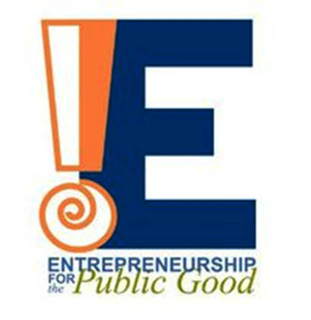
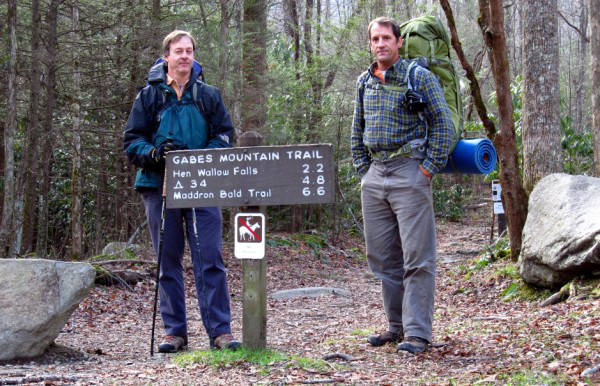
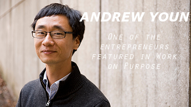
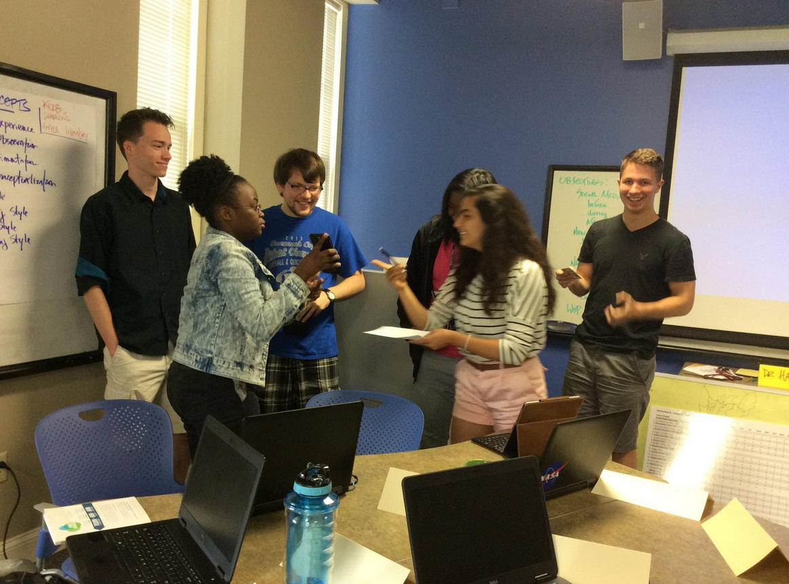
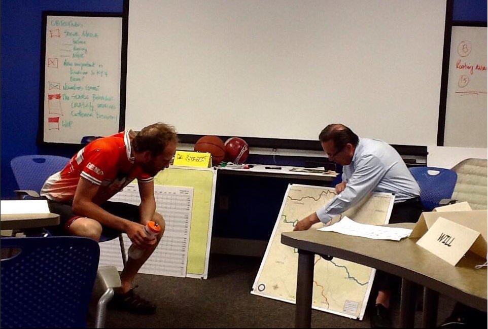
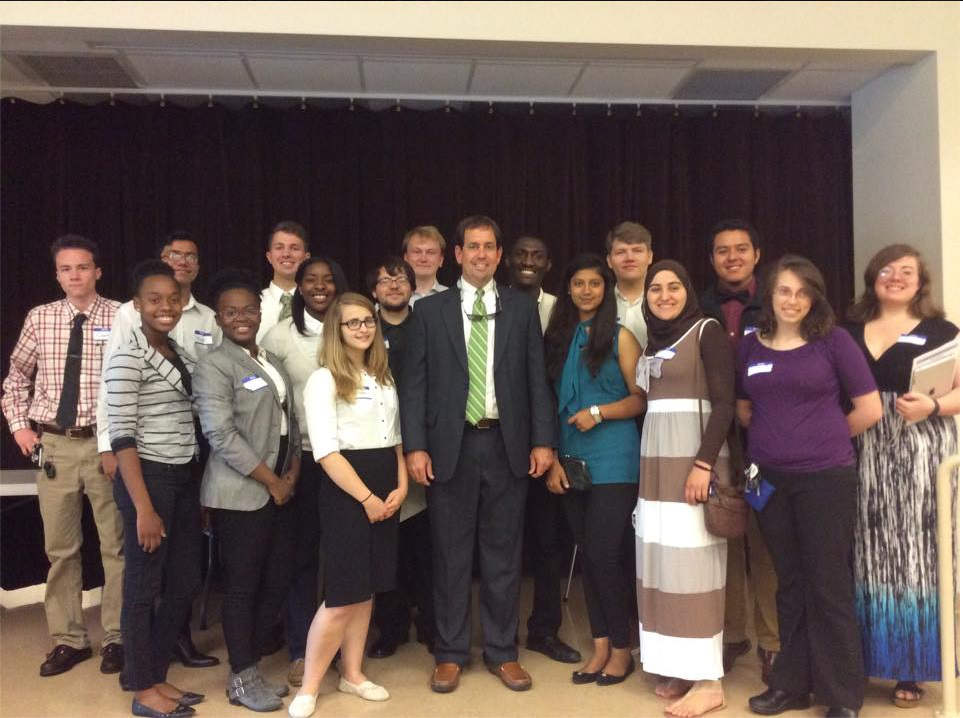

Introduction
Berea College's Entrepreneurship for the Public Good summer institute takes in 20 students to train in entrepreneurship, leadership and community service. The goal of EPG, as of late, has been to stimulate the local economy of Eastern Kentucky by helping small business owners to optimize and reach out to tourist in the area. Many counties in Eastern Kentucky have a ~3% tourism tax that applies to places like restaurants and gift shops. Thus tourist dollars spent in Eastern Kentucky go directly to the pockets of small business owners and to the local governments to improve infrastructure and pay for public utilities and services. EPG is an 8 week program in which students spend 4 weeks learning about Appalachia, entrepreneurial practices, and communication skills, and 4 weeks traveling Eastern Kentucky, Western North Carolina, and West Virginia sharing what they learned with business owners and communicating with local politicians about improving tourism.
How are 20 students to accomplish all of this in 8 weeks?
Through the careful planning, instruction, and guidance of Dr. Peter Hackbert, a leading entrepreneurship professor who has been with the program for eight years. The first day was primarily dedicated to filling out the Kolb Learning Style and Edison Innovation Literacy Blueprint. These learning assessment quizzes help to map out specific learning styles of the students and will be used to diversify and organize teams to maximize learning and communication diversity within each team. We also began a series of documentaries outlining the history of Appalachia from geological conception, through the first Native American inhabitants, to the coal mining dependency in the 19th and 20th century.
Our first speaker
We heard from Johnny Molloy, a professional adventurer and author of over 50 hiking, camping and outdoor activity guides, who informed us that the Appalachian region is a hub of natural tourism attractions from trails, caves, rivers and mountains. He also shared the importance of tourism economy in Eastern Kentucky.
Social media for economic development
After we finished discussion with Johnny, Hackbert introduced to us the role of social media platforms (Facebook, Tripadvisor, and Yelp) in bringing business to local enterprises. Facebook posts about events you are attending can drive traffic to those events from your friends and increase awareness of an issue like eco-tourism. Tripadvisor and Yelp are key platforms for writing reviews of destinations and businesses that are viewable for thousands of interested people worldwide. A positive review of a local coffee shop could be the deciding factor for driving a tourist to it rather that a chain store.
Key readings
Of course, the program is not all fun and games. We are also expected to accomplish several readings during our off time. The first week was dedicated to reading "Work on Purpose" (WOP) by Laura Galinsky. WOP is a production of Echoing Green, a social entrepreneurship seed funding organization. The book's major theme can be summarized in one equation: HEAD + HEART = HUSTLE. The argument is that to be happy in one's professional life, one needs to find an occupation where their head (their abilities and logic) and heart (their passion) are aligned. The book follows the stories of 6 individuals as they struggled with aligning their heart and head and how they eventually found or created that perfect combination and achieved hustle.
Creativity is key
Throughout the week, Hackbert had us participate in classic spontaneous creativity exercises. For example, all 20 students were asked to organize themselves in order of chronological birthdate without speaking and describe as many uses for a brick as we could in 90 seconds. I completed all of the exercises previously during my stay at Stanford University as a part of the University Innovation Fellows Annual Meetup (which is where I am guessing Hackbert discovered these exercises).
To city hall
Wednesday Hackbert selected 5 students (I happened to be one of them) to join him at Berea City Hall to observe a meeting of the Berea Tourism Commission to get a feel for the atmosphere and to become acquainted the members of the commission. I shook hands with the mayor of Berea!
Bike the US
Thursday, we heard from Matt Krajewski, a mechanical engineer who was fed up with his job and quit to bike across the US for charity and happened to be passing through Berea. To read more about Matt's journey check his website/blog. Matt explained that he was traveling frugally, depending on warmshowers.org to find free housing and using the free Wi-Fi from restaurants to maintain his blog. Matt's story was inspiring and cautionary and I intend to follow his blog to check his progress in the coming weeks.
Getting Political
Friday's adventure took us to Richmond, KY where we had lunch at the Chamber of Commerce State of the County Address. The goal of this meeting was to begin to practice networking with local business owners and local politicians. We heard from Judge Executive Reagan Taylor about the state of Madison County financially.

EPG so far...
By no means is this everything that I did this week. These are the highlights, the things that were memorable and I thought would be interesting. EPG, for me, has been more focused on learning about Appalachia than I initially envisioned. I don't care much for learning about Appalachia as a region. I am hoping that the following weeks will include more personal/interpersonal development as well as entrepreneurial training. So far, EPG seems promising in helping me develop professional skills as well as giving me experience with customer profiling. Not regretting the decision to dedicate half my summer to EPG yet.